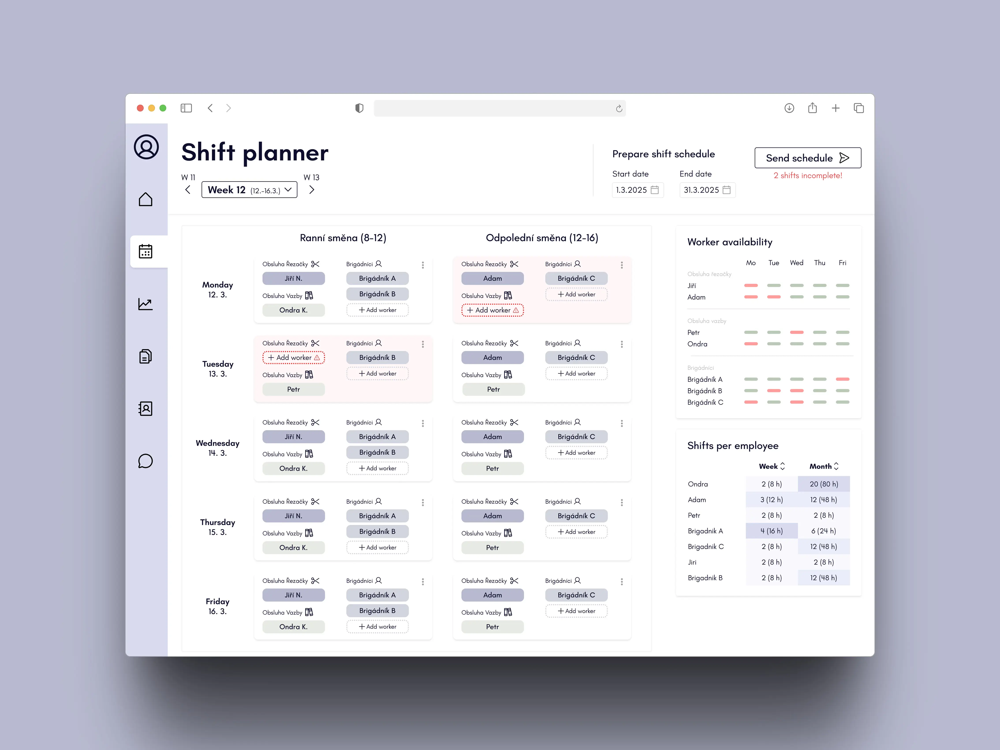
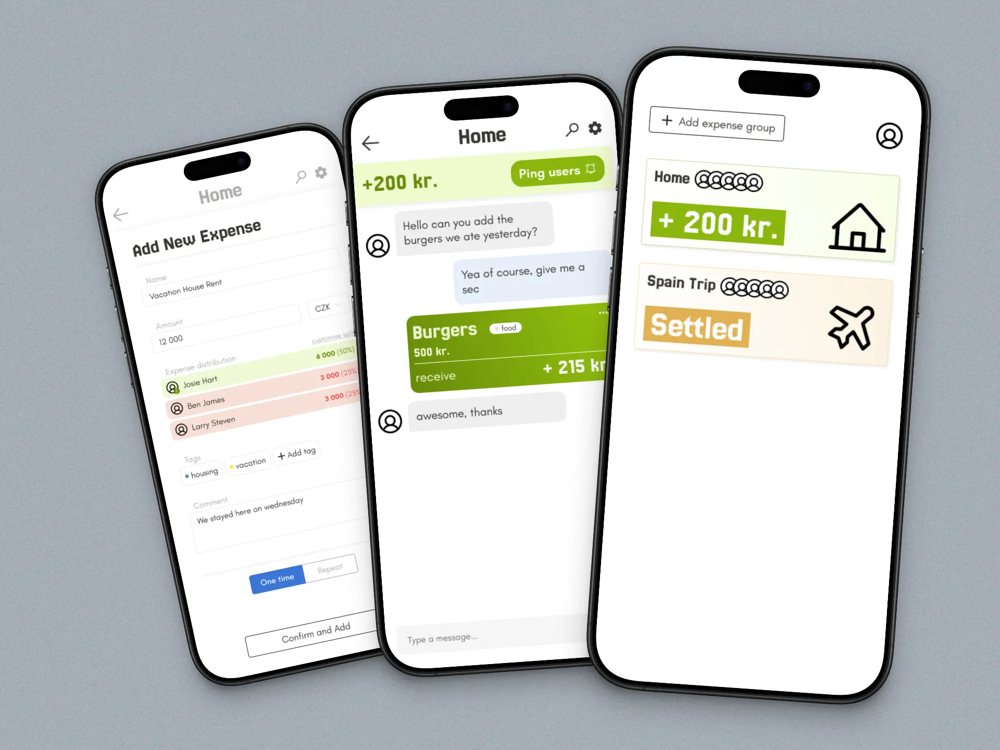
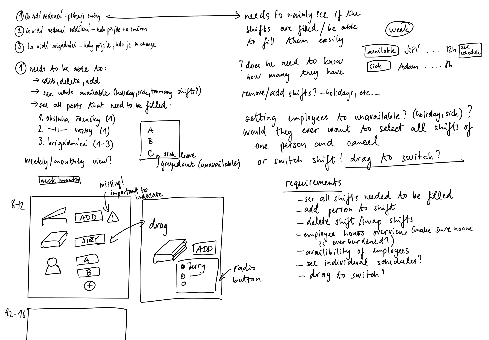
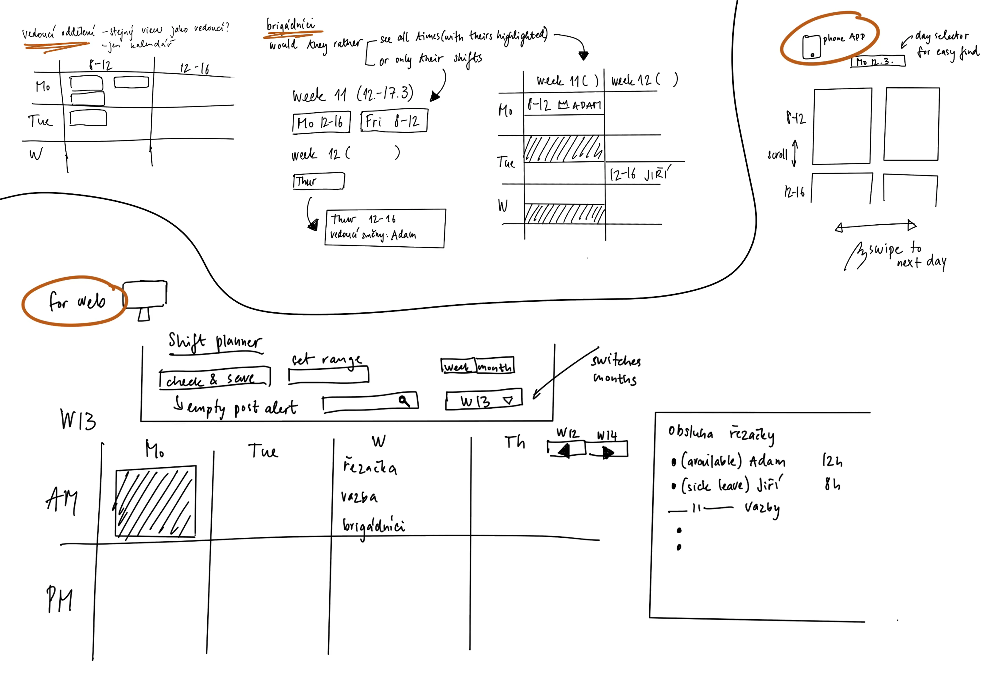
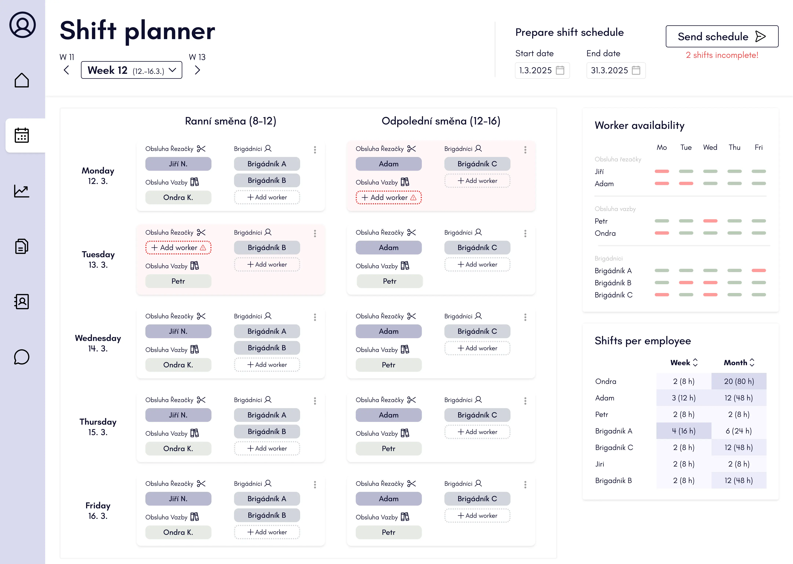
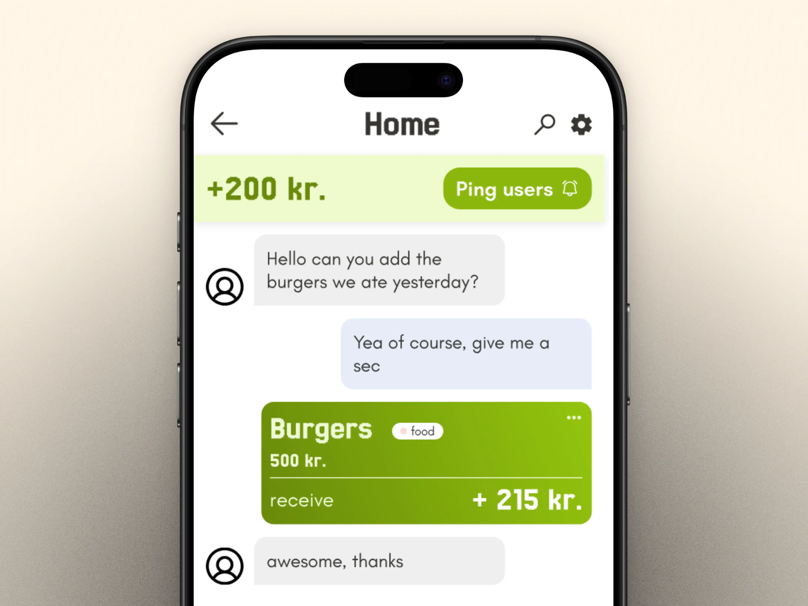
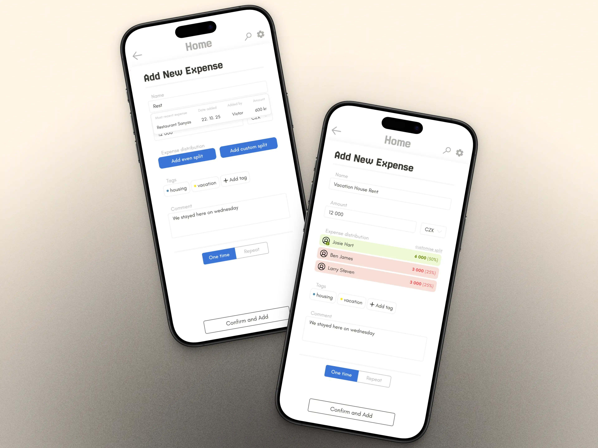
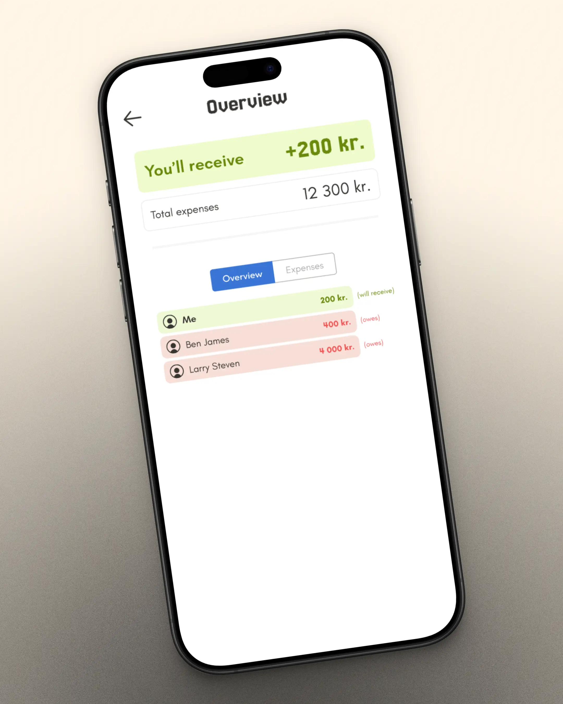

Veronika Nemcova
I moved from the Czech Republic to Denmark when I was 18 to pursue both my Bachelor's and Master's degrees.
Along the way, I developed a strong passion for research, user-centered design, and human-AI interaction.
See my work

About Me
I am a 25-year-old UX/UI designer who is also skilled in front-end development. I have a strong passion for
user-centred design, research and problem solving. Group projects at the university have not only taught me
good research techniques and
project management but also how to be a team leader and work as part of a group. For over three years I have
been involved in the EU funded RES-Q+ project, which focuses on the improvement of post-stroke care worldwide
through digital solutions
such as conversational agents or natural language processing systems.
Education
Medialogy is a unique study that equips its students with skills
from multiple fields of expertise. Programming, interface design,
data analysis, cinematography and artificial intelligence are some
of the various courses taken. Additionally, not only do students
learn how to work and be part of a team, they also get an
understanding of how to conduct research, design a project,
implement a product, evaluate and analyze data. As part of the exam
students are taught to present and reflect on their project, which
is an important process for improving one's skills.
Revolutionizing Stroke Care with AI
I have been working with RES-Q+ for three years as part of this EU-funded Horizon project, aimed at
transforming stroke care across Europe. RES-Q+ enhances the global REgistry of Stroke Care Quality (RES-Q) platform by integrating AI-powered
natural language processing for automated data entry. This innovation improves healthcare efficiency,
reduces costs, and saves lives. Additionally, we’re developing virtual assistants to enable seamless data
use by patients and physicians,
driving significant improvements in stroke care quality throughout the continent.
My work on the project included focusing on the Data Import Tool (DIT), the Patient Virtual Assistant
(pVA), and the Clinician Virtual Assistant (cVA).
Patient Virtual Assistant (pVA)
The patient Virtual Assistant (pVA) project is designed to help patients answer medical questionnaires and
address stroke-related questions. Utilizing AI technology, the PVA enhances patient engagement and provides
timely support for managing
stroke-related concerns.

I designed a system tailored for the shift planner in a print workshop, focusing on
efficient scheduling and workforce overview. The main priority was to create a user-friendly interface for
the shift manager, allowing quick planning of both regular workers and temporary staff. While the solution
(see sketches)
also considers the needs of department heads and temporary workers, the primary emphasis was on the shift
planner’s experience. The initial visual concept was created in Figma for both desktop and mobile views.
WannaShare - App for sharing expences

I have designed a shared expenses app with my partner after we struggled to find one with good usability and
design. Together, we are implementing and refining it to be simple, sleek, and easy to use—perfect for
groups settling costs, like trips where everyone pays for something.
Streamlining Data Entry with the Data Import Tool (DIT)
The Data Import Tool (DIT) project is designed to enhance the efficiency of data entry into the RES-Q
registry by automating the import of critical information from patient discharge letters through advanced
natural language processing.
Clinician Virtual Assistant (cVA)
The clinician Virtual Assistant (cVA) aids healthcare professionals in analyzing care quality indicators and
identifying trends. By generating visualizations from RES-Q data, the cVA helps clinicians understand
changes in care quality and
forecast future performance, ultimately improving patient outcomes.
Back
Streamlining Data Entry with the Data Import Tool (DIT)
Project Goal:
The Discharge Importer Tool (DIT) aims to streamline data entry for clinicians by automatically extracting
relevant information from patient discharge reports using natural language processing (NLP). Its split-screen
interface displays the
discharge letter on the left and the input form on the right, allowing users to review and confirm the
accuracy of pre-filled data fields.
My Contributions:
-
Target Group Research: Gathered research on the target group, identifying user needs and
creating scenarios to ensure the DIT aligns with clinician workflows.
-
Prototype Testing: Tested the current prototype with clinicians to gather feedback on
usability and functionality, informing necessary adjustments.

-
Iterative Design: Iterated the design through wireframes, mockups, and UI designs, refining
the user interface based on clinician feedback and usability testing.

-
User Scenarios Development: Created user scenarios to illustrate the context of
interactions with the DIT, ensuring that the tool meets the needs of diverse clinician personas and their
workflows.
-
Functional Requirements and NLP Prediction: Established detailed functional requirements to
guide DIT development, including the design of NLP prediction presentations that minimize bias and enhance
user trust in the system.
Outcome:
The outcome of this project is a comprehensive design document that outlines all aspects of the Discharge
Importer Tool (DIT). This document includes user requirements, functional specifications, and design
rationales, ensuring a clear
understanding of the tool’s functionality and workflows. By providing detailed guidance on the implementation
of the DIT, it aims to facilitate efficient development and integration into clinical settings.
Back
Patient Virtual Assistant (pVA)
Project Goal:
The goal of the patient Virtual Assistant (pVA) is to support stroke patients by helping them complete medical
questionnaires and providing access to stroke-related information. It is designed to improve patient
engagement by offering a
straightforward way to manage their own health data. Ultimately, the pVA aims to streamline the collection of
patient-reported outcome measures, contributing to better-informed stroke care.
My Contributions:
-
User Needs Assessment: Conducted research to understand patient needs, focusing on
accessibility and usability for stroke survivors.

-
Personas and Scenario Development: Developed seven detailed personas and scenarios to guide
the design of the pVA, ensuring it effectively addresses diverse patient needs and interaction styles.


-
Prototype Development and Iteration: Created initial Figma prototypes and led Wizard of Oz
workshops to simulate interactions, iteratively refining the design based on direct patient feedback and
usability insights.
-
Conversational Flow Framework: Established a framework for the VA's conversation flow,
drawing on literature analysis to ensure natural and effective communication with patients.
-
Functionality and Interface Design: Defined core features and interface elements
specifically for stroke patients, focusing on usability and intuitive navigation.
-
Requirements Documentation: Compiled comprehensive functional requirements and
specifications, providing a clear development roadmap that aligns with patient needs and project objectives.
I visualised the process of one of the
requirements, which was linking the pVA to the RES-Q database.
Below you can see the original mapping of the process and my redesigned version:

-
Continuous Design Improvements: Integrated findings from usability studies and workshops
into ongoing design iterations, ensuring the pVA remains user-centered and effective in real-world
applications.
Outcome:
The outcome of the pVA project is a comprehensive service design document that outlines the final design and
functionality requirements of the patient virtual assistant. This document serves as a crucial resource for
developers, detailing user
needs, interaction scenarios, and usability insights gathered from stroke survivors. By providing clear
guidelines and specifications, it ensures that the pVA effectively meets the accessibility and usability needs
of its intended users.
Additionally I designed an academic poster for one of the pVA user studies:
Back
Clinician Virtual Assistant (cVA)
Project Goal:
The goal of the clinician virtual assistant (cVA) is to enhance healthcare quality by providing clinicians
with data-driven insights and visualizations that support informed decision-making. It aims to streamline the
analysis of care quality
indicators, enabling clinicians to identify trends, assess the impact of treatments, and benchmark against
guidelines and peer institutions. By facilitating easy access to relevant data, the cVA empowers clinicians to
improve patient outcomes and
optimize care delivery.
My Contributions:
-
Design and User Experience: Developed the overall design and user experience of the cVA,
focusing on usability and efficiency for clinicians.
-
Figma Prototyping: Created interactive Figma prototypes to visualize the cVA's interface
and functionality, enabling iterative feedback and refinement.
-
Frontend Implementation: Collaborated on the frontend implementation of the cVA, ensuring
alignment with design specifications and enhancing user interaction.
Outcome:
The outcome of the clinician virtual assistant (cVA) project is a fully designed and user-tested tool that
helps clinicians efficiently analyze care quality data through intuitive visualizations. The cVA supports
informed decision-making by
enabling easy access to trends and benchmarking insights, which ultimately aids in improving patient outcomes.
With a clear design and detailed functionality requirements, the project provides a solid foundation for
seamless development and
implementation in clinical settings.
Back
Project Goal:
I designed a system tailored for the shift planner in a print workshop, focusing on
efficient scheduling and workforce overview. The main priority was to create a user-friendly interface for
the shift manager, allowing quick planning of both regular workers and temporary staff. While the solution
(see sketches)
also considers the needs of department heads and temporary workers, the primary emphasis was on the shift
planner’s experience. The initial visual concept was created in Figma for both desktop and mobile views.
Design Strategy:
-
Identify User Needs: To tackle this design task, I began by identifying the key user
needs—focusing primarily on the shift planner. In a real-world scenario, I would typically conduct user
interviews or observe shift planning in action (e.g., on paper or in existing tools) to understand the task
flow, key priorities, and common challenges. This helps ensure that the solution is tailored to the actual
user workflow and uncovers pain points or opportunities for improvement in the current process.
-
Create System Requirements: Based on the user needs I had previously identified, I created
a set of system requirements to guide the design. For example, the shift planner needs to be able to easily
assign
available personnel to shifts, quickly identify if any shift is missing key workers, and make fast
adjustments
such as swapping shifts. It's also important to provide a clear overview of employee availability and
workload, especially in physically demanding environments where overworking staff must be avoided.
Additionally, the system should support fair distribution of hours, particularly for part-time or temporary
workers.
-
Design sketching:
I created a series of basic design sketches to explore the key features and overall layout of elements on
the screen. These early visual drafts helped me think through the user interface, prioritize functionality,
and begin shaping a clear structure for the shift planning experience.


-
UI Design in Figma: I designed the user interface in Figma with a strong focus on usability
for the shift planner. The interface allows users to add workers to shifts, drag and drop both workers and
shifts, and clearly indicates if a shift is missing required personnel. The weekly schedule is easy to
navigate, with the option to switch between weeks seamlessly. A sidebar provides quick access to worker
availability and the number of assigned shifts per employee. To prevent confusion during planning, workers
only see schedules once finalized—planners can set a date range (e.g., a week, month, or three months) and
send the schedule when ready. Before sending, the system automatically checks for unfilled shifts to ensure
completeness.

-
Creating an App Design:
I also created mobile versions of the interface, focusing on maintaining visual and interaction consistency
with the web app. Given the limited screen space on mobile, I adapted the
layout to display one day at a time, allowing users to swipe horizontally between weekdays. To switch
between weeks, users can use arrow buttons or select from a dropdown. The "Send Schedule" action is
positioned at the bottom for easy access. Features with lower priority, such as worker availability and
shift counts per employee, are accessible via two icons in the top right corner, requiring an additional
interaction to keep the main screen clean and focused.
Back
WannaShare - App for sharing expences
Project Goal:
I have designed a shared expenses app with my partner after we struggled to find one with good usability and
design. Together, we are implementing and refining it to be simple, sleek, and easy to use—perfect for groups
settling costs, like trips where everyone pays for something.
Group Expense Screen:

-
Search previous expenses: Identified the need for users to verify existing expenses and
designed a search feature that supports quick lookup, helping prevent duplicates and improve clarity in the
expense tracking flow.
-
Overview of Total Expenses Amount: Recognized that the amount is the most critical piece of
information for users when reviewing expenses. Designed the layout to ensure the amount remains visible at
all times, reducing cognitive load and helping users stay oriented as they interact with the interface.
-
Reminder System to Nudge Users: Observed that group members often forgot to settle their
shared expenses. To address this, I introduced a user-friendly reminder feature that allows users to ping
others who haven’t paid yet—making it easier to follow up without awkwardness and keeping payments on track.
-
Clear Color Coding: To reduce ambiguity and improve at-a-glance understanding, I introduced
a clear color-coded system indicating whether a user owes money or is set to receive it. This visual
distinction helps users quickly grasp their status without needing to read through details.
New Expense Creation:

-
Recent Expense Preview to Prevent Duplicates: To help users avoid accidentally adding the
same expense twice, I designed a feature that surfaces the most recent expense with the same name as you're
typing. This gives immediate context and reduces the chance of duplicates being created.
-
One-Tap Shortcut for Even Splits: Recognizing that evenly splitting expenses is the most
common use case, I added a quick-access shortcut to simplify the process. This reduces friction and speeds
up the flow, letting users divide costs with a single tap.
-
Flexible Custom Splits for Uneven Expenses: To support more complex scenarios like
splitting by percentage or covering specific shares, I designed a custom split option. This feature gives
users full control over how expenses are divided, ensuring fairness and adaptability for any situation.
-
Clear Payout Flow: Who Pays and Who Gets Paid: To avoid confusion during settlements, I
focused on making it easy to distinguish between payers and receivers.
-
Tagging System for Smarter Organization and Insights: Introduced a tagging feature that
lets users categorize expenses—making it easier to search by type or context. Beyond organization, this also
lays the groundwork for future data visualizations, like tracking spending trends across categories or
months.
Quick Overview:

-
Expense Overview for Clear Group Balances: Designed an overview screen that summarizes who
owes what within the group. This high-level view helps users quickly understand outstanding balances,
reducing confusion and making it easier to settle up.
Mail
vnemcova99@gmail.com
LinkedIn
www.linkedin.com/in/veronika-nemcova99